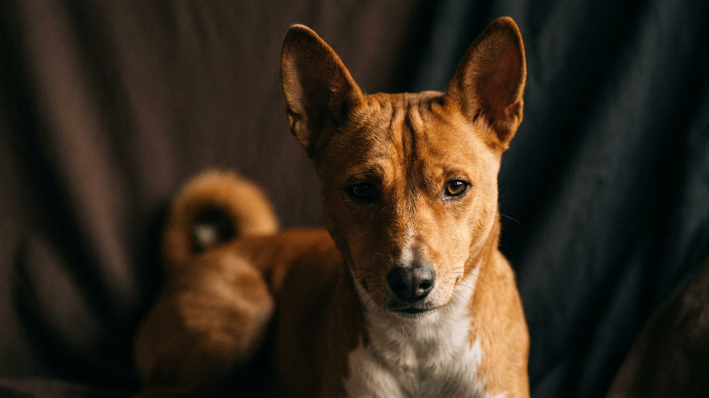

Сосед жалуется на шумных собак, а ваша — молчит. Басенджи физически не умеет лаять: вместо этого он издаёт характерный горловой звук «баруу» — что-то между воем и иодлем. Но тишина обманчива: за ней прячется порода с железной волей, кошачьей независимостью и охотничьим инстинктом, который не выключается. Ниже — честный портрет, который поможет понять, ваш это пёс или нет.
Басенджи — одна из древнейших пород, отбиравшаяся тысячелетиями в Центральной Африке для самостоятельной охоты. Это объясняет многое: он принимает решения без оглядки на хозяина, обследует территорию на собственных условиях и убирается сам — вылизывает шерсть, как кошка. Линяет минимально, запаха «мокрой собаки» почти нет.
Басенджи создавался для преследования добычи на большой скорости и в одиночку. Этот инстинкт никуда не делся. Он заметит птицу, белку или кошку — и рванёт без предупреждения, не слыша команды «ко мне».
🐾 Ваш питомец — басенджи?
Заведите профиль в AnimaLife: приложение запомнит породу, возраст и вес и будет подсказывать по уходу именно для неё. Вопросы AI-ветеринару — круглосуточно и бесплатно.
Завести профиль → Завести в MAX →
У вас iPhone? AnimaLife есть в App Store
Басенджи — не собака для первого опыта. Он требует владельца, который понимает разницу между «не хочет» и «не умеет», умеет выстраивать границы без давления и готов вкладывать время ежедневно.
Ранняя социализация — основа. Щенок до 16 недель должен познакомиться с людьми разного возраста, городскими звуками, другими животными. Пропустить этот период — значит получить взрослую собаку с трудноисправимыми реакциями.
🐾 У вас басенджи?
AnimaLife соберёт уход под породу: к каким болезням есть склонность, что проверять по возрасту, чем кормить и когда пора к врачу. Бесплатно, прямо в мессенджере.
Собрать план ухода → Собрать в MAX →
У вас iPhone? AnimaLife есть в App Store
🐾 Понравился разбор?
Подпишитесь на канал — каждый день разбираем по одному тревожному симптому у кошек и собак: что в пределах нормы, а когда пора к врачу. Подпишитесь, чтобы не пропустить разбор, который может спасти здоровье вашего питомца.
Материал носит информационный характер и не заменяет очную консультацию ветеринара.